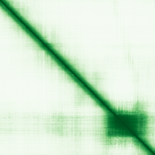
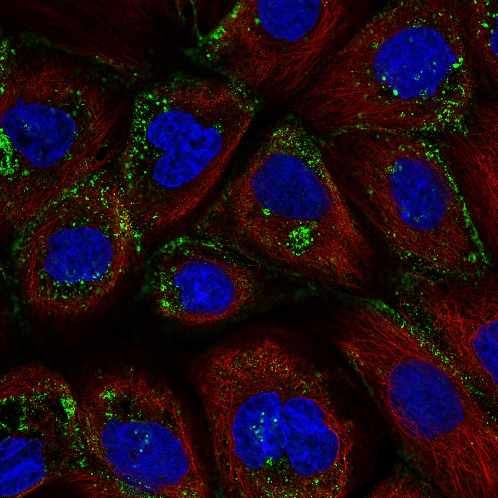

type: protein-evaluation gene: "CITED4" date: 2026-06-01 tags: [protein-scout, nucleoplasm, evaluation] status: scored ---
CITED4 核蛋白评估报告
1. 基本信息
| 项目 | 内容 |
|---|---|
| 基因名 / 别名 | CITED4 / MRG2 |
| 蛋白全名 | Cbp/p300-interacting transactivator 4 |
| 蛋白大小 | 184 aa / 18.6 kDa |
| UniProt ID | Q96RK1 |
2. 评分总览
| 维度 | 得分 | 权重 | 加权 | 摘要 |
|---|---|---|---|---|
| 核定位特异性 | 5/10 | x4 | 20.0 | UniProt Nucleus (ECO:0000269); HPA Vesicles -- 来源不一致 |
| 蛋白大小 | 8/10 | x1 | 8.0 | 184 aa, 18.6 kDa -- very small |
| 研究新颖性 | 8/10 | x5 | 40.0 | Strict=33 |
| 三维结构 | 4/10 | x3 | 12.0 | AlphaFold pLDDT 59.6; 仅 12% >90; 无 PDB |
| 调控结构域 | 7/10 | x2 | 14.0 | CITED domain (CBP/p300-interacting); transcriptional coactivator |
| PPI 网络 | 6/10 | x3 | 18.0 | EP300 (0.955), TFAP2A (0.905), CREBBP (0.841) |
| 加权总分 | 112/180** | |||
| 互证加分 | +0.0 | HPA (Vesicles) 与 UniProt (Nucleus) 不一致 | ||
| 归一化总分 (÷1.83) | 61.2/100** |
PubMed strict: 33
3. 核定位证据
| 来源 | 定位 | 可信度 |
|---|---|---|
| UniProt | Nucleus (ECO:0000269 x2); Cytoplasm (ECO:0000269 x2) | Experimental |
| GO-CC | nucleoplasm TAS:Reactome; nucleus IBA:GO_Central | Traceable Author Statement |
| HPA (IF) | Vesicles (Approved) -- NOT Nucleoplasm | IF available |
HPA IF 状态: IF available -- HPA Approved 但记录定位为 Vesicles，与 UniProt Nucleus 存在显著不一致。HPA 在 U-2 OS 细胞系检测可能因细胞系/抗体差异未捕获核信号。CITED4 作为转录辅激活因子，其核心功能依赖核定位（与 CBP/p300 在核内互作），但 HPA 数据不支持。

PAE 状态: 已获取 PAE 图像。AlphaFold pLDDT 59.6 (mean), 仅 12.0% >90, 53.8% 在 50-70 区间，27.2% <50。小蛋白 (184 aa) 预测质量低，提示大量内在无序区域 (IDR)，可能通过折叠-upon-binding 机制与 CBP/p300 互作。
4. PPI 网络
| Partner | Source | Score/Evidence |
|---|---|---|
| EP300 | STRING | 0.955 (experimental 0.295) |
| TFAP2A | STRING | 0.905 (experimental 0.295) |
| CREBBP | STRING | 0.841 (experimental 0.095) |
| TFAP2C | STRING | 0.694 (experimental 0.295) |
| CITED2 | STRING | 0.642 (database) |
| TFAP2B | STRING | 0.654 (experimental 0.295) |
核心发现: CITED4 的 PPI 网络以 CBP/p300 (EP300/CREBBP) 组蛋白乙酰转移酶和 AP-2 转录因子家族 (TFAP2A/C/B) 为核心。与 EP300 的互作是 CITED 家族的定义性特征。CITED4 通过 CITED domain 与 CBP/p300 的 CH1 区域结合，发挥转录辅激活功能。
IntAct 14 条记录（均为酵母双杂交 array 数据，来自 PMID:20211142）。UniProt 无 interaction 记录。
5. 结构域与染色质调控潜力
| 来源 | 结构域 |
|---|---|
| InterPro | IPR007576 (CITED) |
| Pfam | PF04487 (CITED) |
CITED domain 是 CBP/p300-interacting transactivator 家族的保守结构域，直接结合 CBP/p300 组蛋白乙酰转移酶。通过招募 CBP/p300 至 AP-2 转录因子靶基因启动子，CITED4 可间接参与染色质乙酰化修饰和转录调控。染色质调控潜力通过 CBP/p300 间接实现，非直接 reader/writer。
6. 总体评价
CITED4 是小型转录辅激活因子 (184 aa)，通过 CITED domain 与 CBP/p300 互作参与 AP-2 介导的转录调控。HPA IF 定位为 Vesicles（而非 Nucleoplasm）是主要扣分项，与 UniProt 实验级别核定位存在不一致。蛋白 IDR 比例高（AlphaFold pLDDT 低），可能固有无序需结合伴侣后折叠。PPI 网络小但功能明确（CBP/p300 复合体）。研究新颖性良好 (PM=33)。
推荐等级: 2.5/5
HPA IF 状态: HPA IF 图像已本地嵌入。

关键文献
| PMID | 标题 |
|---|---|
| 40389954 | Gemcitabine resistance by CITED4 upregulation via the regulation of BIRC2 expression in pancreatic c |
| 39066479 | CITED4 gene therapy protects against maladaptive cardiac remodeling after ischemia/reperfusion injur |
| 36899057 | A Kinase Interacting Protein 1 (AKIP1) promotes cardiomyocyte elongation and physiological cardiac r |
| 33275121 | CITED4 mediates proliferation, apoptosis and steroidogenesis of Hu sheep granulosa cells in vitro. |
| 24878634 | CBP-CITED4 is required for luteinizing hormone-triggered target gene expression during ovulation. |
PAE 图像暂无数据（未生成本地图片或未可靠获取），结构判断基于AlphaFold pLDDT统计。
<!-- DOMAIN_HUMANPPI_REPAIR_START -->
Domain/SMART 与 humanPPI 补充（2026-06-07）
SMART / UniProt domain
| Source | Data |
|---|---|
| UniProt | Q96RK1 |
| SMART | 未在 UniProt xref 中检出 SMART 条目 |
| UniProt Domain [FT] | 未检出显式 UniProt Domain feature |
| InterPro | IPR007576; |
| Pfam | PF04487; |
humanPPI / HPA Interaction
Source: https://www.proteinatlas.org/ENSG00000179862-CITED4/interaction
| Partner | Datasets | AF3/HPA structure |
|---|---|---|
| EP300 | Biogrid | false |
<!-- DOMAIN_HUMANPPI_REPAIR_END -->